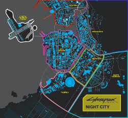

Plot
The game begins with the selection of one of three lifepaths for the player character V: Nomad, Streetkid, or Corpo. All three lifepaths involve V starting a new life in Night City with local thug Jackie Welles and having various adventures with a netrunner, T-Bug.
In 2077, local fixer Dexter DeShawn hires V and Welles to steal a biochip known as "the Relic" from Arasaka Corporation. They acquire the Relic, but the plan goes awry when they witness the murder of the megacorp's leader Saburo Arasaka at the hands of his treacherous son Yorinobu. Yorinobu covers up the murder as a poisoning, and triggers a security sweep in which T-Bug is killed by Arasaka's netrunners. V and Welles escape, but Welles is fatally wounded in the process, and the Relic's protective case is damaged, forcing V to insert the biochip into the cyberware in their head.
DeShawn, furious at the unwanted police attention, shoots V in the head and leaves V for dead in a landfill. Upon awakening, V is haunted by the digital ghost of war veteran turned iconic rock star Johnny Silverhand, believed to have died in 2023 during an attempted thermonuclear attack on Arasaka Tower. V learns from their ripperdoc Viktor Vector that DeShawn's bullet triggered resurrection nanotech on the biochip, repairing the damage to V's brain but starting an irreversible process to overwrite their memories with that of Silverhand's, leaving V only a few weeks before the process completes. The biochip cannot be removed, so V must seek out a way to remove Silverhand and survive.
Through reliving Silverhand's memories, V learns that in 2023, Silverhand's then-girlfriend Alt Cunningham had created Soulkiller, an artificial intelligence able to copy netrunners' minds through their neural links. However, the process destroyed the target's brain. Arasaka kidnapped Cunningham and forced her to create their own version of Soulkiller, which would store the minds of its targets in Arasaka's digital fortress, Mikoshi. Silverhand led a rescue effort to save Cunningham, but failed to find her before Arasaka used Soulkiller on her; Silverhand's later thermonuclear attack was a cover to free Alt's consciousness from Arasaka's subnet, but Arasaka captured him and used Soulkiller on him as well.
By 2077, Arasaka was advertising a "Secure Your Soul" program, and conducting secret research into writing a digital copy of a mind into a living human brain, from which the Relic arose. Eventually, V must decide whether to mount an attack on Arasaka Tower to gain physical access to Mikoshi and use Soulkiller to remove Silverhand from their body.
Depending upon player actions throughout the game, V can choose between different options to conduct the attack. V can decide to commit suicide, allow Silverhand to stage the attack with his former crew, mount the attack with a network of allies assembled during the game, or mount the attack solo. Regardless, after successfully using Soulkiller, it is revealed that the damage to V's body is irreversible. Depending on player choice, V either remains in their body, with an uncertain life expectancy, or allows Silverhand to take over permanently, in which case he pays his respects to his friends and leaves Night City to start a new life.